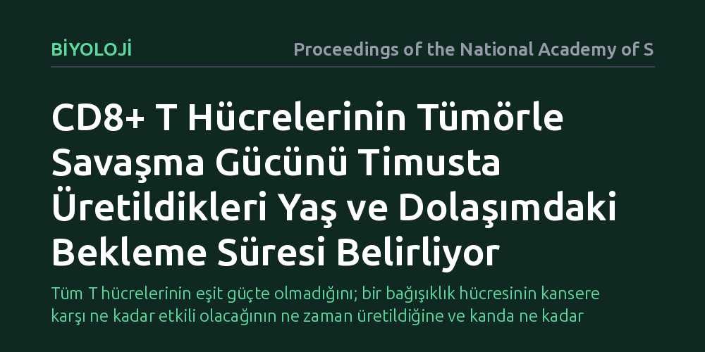

BIYOLOJI · Proceedings of the National Academy of Sciences · 2026-10-07
Araştırmacılar, bağışıklık sisteminin kilit savaşçıları olan CD8+ T hücrelerinin yaşamın hangi evresinde üretildiğinin ve dokularda ne kadar süre beklediğinin kanserle mücadelelerini nasıl etkilediğini fare modellerinde inceledi. Bulgular, hücrenin timusta üretildiği yaşın ve çevrede geçirdiği sürenin tümörle savaşma gücünü doğrudan belirlediğini ortaya koydu.
Tüm T hücrelerinin eşit güçte olmadığını; bir bağışıklık hücresinin kansere karşı ne kadar etkili olacağının ne zaman üretildiğine ve kanda ne kadar beklediğine bağlı olduğunu gösteriyor.

Kanser immünoterapisi son yıllarda tıpta büyük bir umut kaynağı oldu; özellikle bağışıklık sisteminin katil hücreleri olarak bilinen CD8+ T hücrelerinin tümörleri tanıyıp yok etmesi hedefleniyor. Ancak klinikte karşılaşılan en büyük bulmacalardan biri, aynı hastada veya benzer genetik özelliklere sahip hücre popülasyonlarında dahi T hücrelerinin tümöre karşı çok farklı düzeylerde tepki vermesidir. Klasik bağışıklık bilimi görüşü, henüz antijenle karşılaşmamış 'deneyimsiz' T hücrelerinin birbirine büyük ölçüde denk olduğunu ve aralarındaki temel farkların ancak bir tehditle karşılaştıktan sonra şekillendiğini varsayma eğilimindeydi.
Oysa son yıllarda yapılan temel biyoloji çalışmaları, T hücrelerinin vücutta üretildikleri döneme göre farklı programlar edinebileceğine işaret ediyor. Göğüs kafesinin hemen arkasında yer alan timus bezi, yaşam boyu T hücresi üretir; ancak gençlikteki bir timus ile yaşlılıktaki bir timusun ürettiği hücreler aynı biyolojik çevrede yoğrulmaz. Yanıtı aranan temel soru şuydu: Bir T hücresinin yaşamın hangi evresinde timustan mezun olduğu ve kanda ya da lenf bezlerinde ne kadar süre beklediği, ileride bir tümörle karşılaştığında sergileyeceği savaşma yeteneğini önceden programlıyor olabilir mi?
Araştırmacılar bu soruyu yanıtlamak için farelerde zaman damgalı hücresel kader haritalama adı verilen hassas bir genetik takip sistemi kullandılar. Bu yöntemde, belirli bir yaşam evresinde timustan çıkan T hücreleri genetik olarak kalıcı bir florasan etiketle damgalanıyor. Böylece araştırmacılar, farenin yenidoğan döneminde mi, gençlik çağında mı yoksa yetişkinlik döneminde mi üretildiğini bildikleri CD8+ T hücrelerini birbirinden ayırt edebildi.
Kurgulanan kontrollü deneylerde, hücrelerin iki temel zaman boyutu titizlikle ayrıştırıldı: hücrenin timik yaşı (yani farenin hangi yaşam evresinde timustan üretildiği) ve çevresel bekleme süresi (yani hücrenin timustan çıktıktan sonra dolaşımda ne kadar süre uykuda veya devriye halinde kaldığı). Ardından bu hücreler tümör modelleri içeren ortamlarda sınandı ve hücrelerin tümörü yok etme kapasiteleri, yorgunluk belirteçleri ve genetik aktivite profilleri hücresel düzeyde ölçüldü.
Çalışmanın sonuçları, CD8+ T hücrelerinin homojen bir ordu olmadığını doğrudan kanıtladı. Timusun erken dönemlerinde üretilen T hücreleri ile daha ileri yaşlarda üretilenler arasında tümöre yanıt verme kapasitesi açısından belirgin farklar saptandı. Hücrelerin geliştirdiği fonksiyonel programların rastlantısal olmadığı, timustan çıkış anında hücre hafızasına kazınan gelişimsel bir iz taşıdığı anlaşıldı.
Daha da önemlisi, hücrenin dolaşımda ne kadar süre kaldığı da en az üretildiği evre kadar kritik bir rol oynuyordu. Dolaşımda uzun süre boyunca hiçbir antijenle karşılaşmadan bekleyen T hücreleri, yeni üretilmiş taze hücrelere kıyasla tümör mikroçevresinde farklı bir tükenmişlik ve yanıt paterni sergiledi. Bu bulgu, bağışıklık sisteminin tümörle savaşma yeteneğinin sadece o anki T hücresi sayısına değil, o hücrelerin gelişimsel geçmişine ve dolaşımdaki bekleme geçmişine bağlı olduğunu gösterdi.
Bu çalışma, kanserle savaşta T hücrelerini laboratuvarda çoğaltıp hastaya geri verme esasına dayanan hücresel tedaviler için yeni bir bakış açısı sunuyor. Bir hastadan bağışıklık hücresi toplanırken bugüne dek çoğunlukla hücrelerin fenotipik yüzey işaretlerine bakılıyordu. Bu çalışma ise toplanan hücre havuzunun içinde gelişimsel olarak ne zaman doğmuş ve ne kadar süredir dolaşımda olan hücrelerin baskın olduğunun, tedavinin başarısını doğrudan etkileyebileceğini gösteriyor.
Yine de ihtiyatlı olmak gerekiyor: Çalışma insanlarda değil, kontrollü fare modellerinde gerçekleştirildi. İnsan bağışıklık sistemi fareye kıyasla onlarca yıl boyunca çok daha karmaşık çevresel etkenlere maruz kalır. Bu nedenle, farelerde gözlemlenen timik yaş ve bekleme süresi dinamiklerinin insan kanser hastalarında ne ölçüde aynı şekilde işlediğini doğrulamak için bağımsız klinik çalışmalara ihtiyaç duyulacaktır.